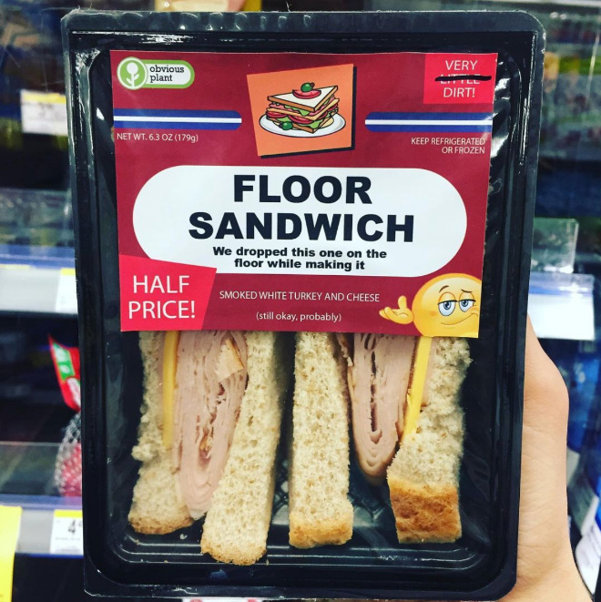
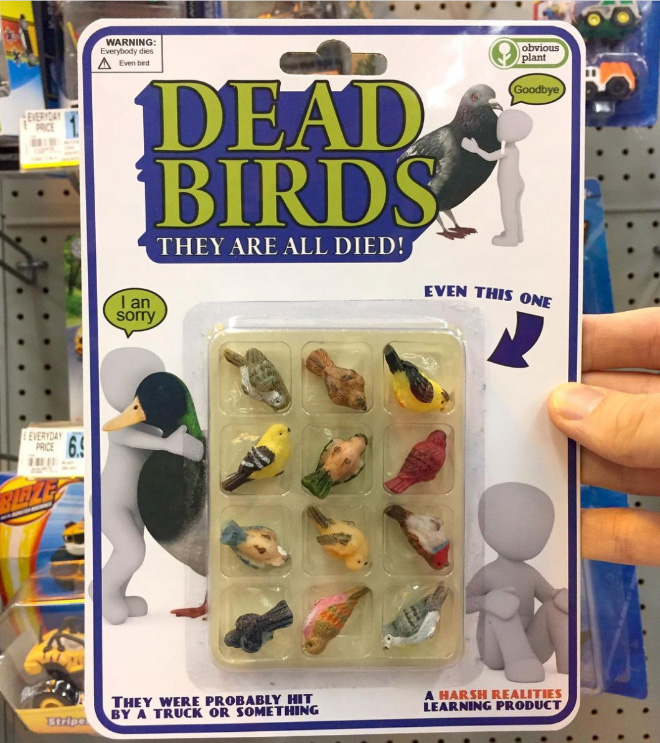
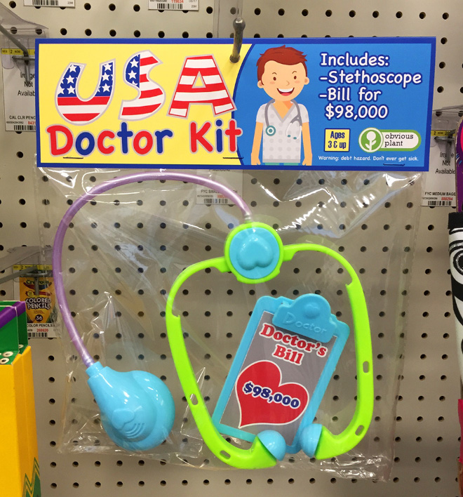
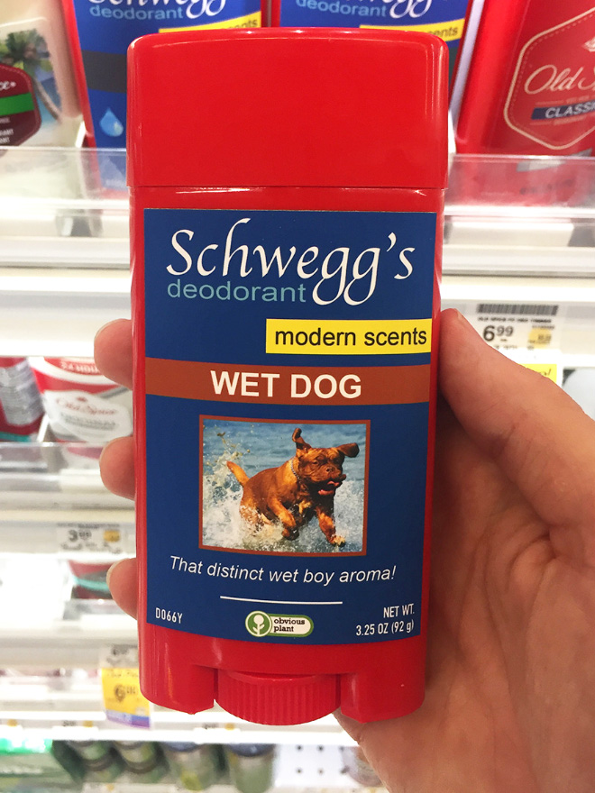
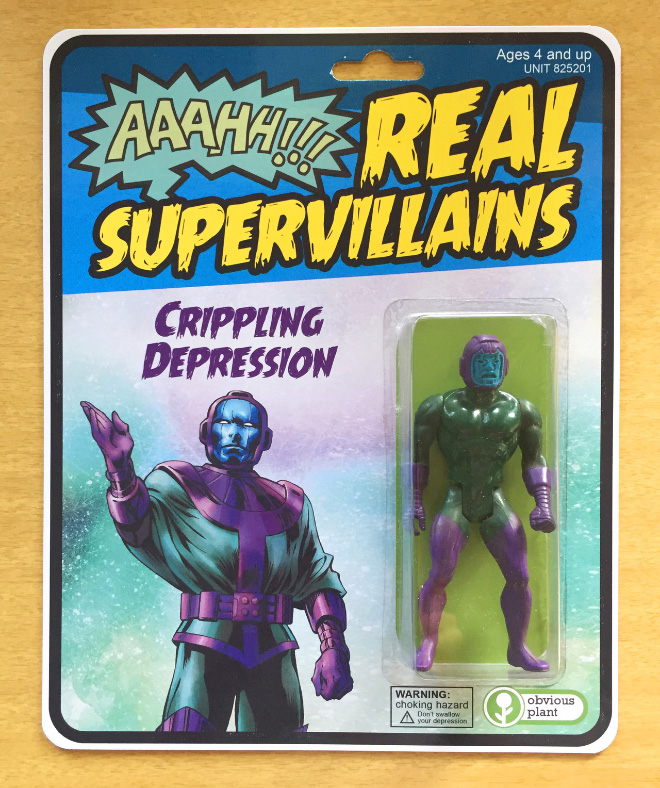
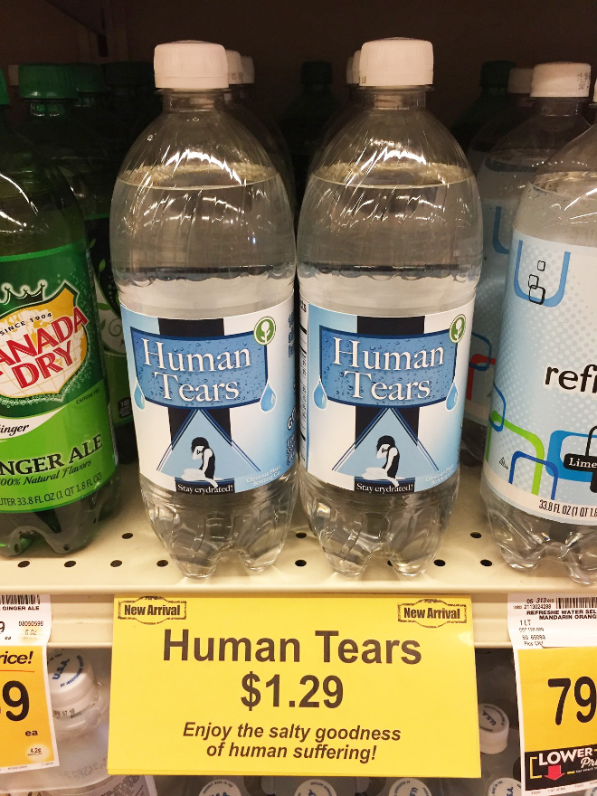

About Victor
Victor is currently working through the Codecademy Full-Stack Engineer path in an effort to be more useful in the foundering team of his startup company Trestle.
As of the moment of this portfolio creation, Victor has completed 30% of the overall coursework on the Full-Stack Path.
Below, you will find a bunch of projects that Victor definitely did not work on, but has copied over to this portfolio project specifically so it can take up some space!
Notable Projects I've Definitely Not Worked On

Floor Sandwich

Plastic Dead Birds

Medical Bills

Wet Dog Deoderant

Crippling Depression

Human Tears